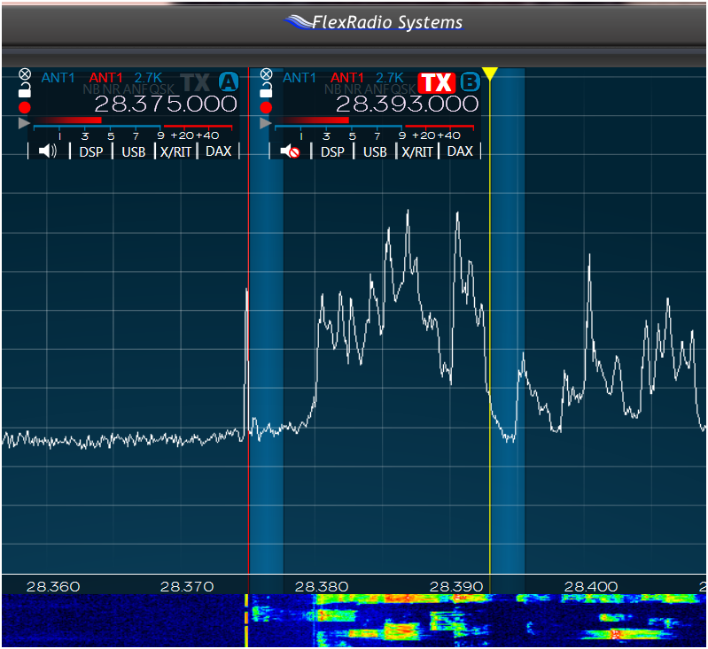

Rob I have been using both the pan adaptor and waterfall displays with my Flex Radio system for “hole spotting” and also using … a SteppIR antenna system…. As you have. When you sent the attached screen display I thought I was looking at one of my own monitors! Your screen display says it much better than words are capable of doing. 73, Ted, K6XN From: Chat [mailto:chat-bounces@ncdxc.org] On Behalf Of Rob via Chat Used this method to work K1N barefoot to a SteppIR after calling for a while. He was listening at 28375 and worked him up at 28393, can see the "hole" in panadapter and waterfall:  73, Rob - AG6RK From: K6XN via Chat <chat@ncdxc.org> Jim and Rick I am also using spectral displays to spot “holes” in the relevant “calling” spectrum using either of two rigs. My Yeasu FT-2000 system includes the optional “DATA MANAGEMENT UNIT DMU-2000” and among other things will provide a spectral display of the relevant portion of the band of interest on a 19 inch computer monitor which easily identifies the “holes”. My other main rig is a FLEX-5000A SDR system which drives another 19 inch monitor that provides a number of different displays and is outstanding in identifying “holes” and has the additional benefit of simply being a mouse click away from positioning oneself exactly and quickly in a “hole” as they reveal themselves on the spectrum displayed by the 19 inch monitor….and only a second mouse click away from making a call precisely positioned in the “hole” of interest. I have had some modest success so far using just the techniques you have been discussing to work K1N. GL and 73, Ted, K6XN From: Chat [mailto:chat-bounces@ncdxc.org] On Behalf Of jim sansoterra via Chat I had some success on 12 and 17 with staying at the edge farthest from them..and not moving . I tried the "hole" method...you got it--too many to push through but for normal dxing (hi) its a good strategy I can second the idea of the SVGA card--mine feeds a cheap 15" flat screen--huge help. JIM k8JRK On Fri, Feb 6, 2015 at 4:44 PM, Rick WA6NHC via Chat <chat@ncdxc.org> wrote: I have one (K line and a dipole). But because of many poor operators, it isn't of much help this time. With hundreds sending calls (or worse) in the blind (or ears not working), it's a challenge to track the K1N op pattern. I'm a little pistol, and the thing that I've learned from this K1N experience is ... I need a P3. Mostly when I've had time to play, the pileups have been so ridiculously wide that I haven't been able to find the other side of the Q. Period.
_______________________________________________ |